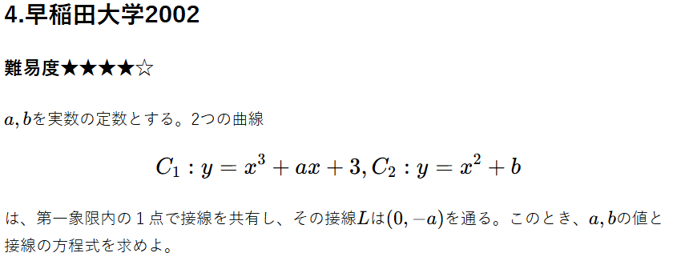

重要ポイント
関数\( f(x), g(x) \) どうしが\( x = t \) 接するとき、 $$\ \begin{cases} f(t) = g(t) \\ f'(t) = g'(t) \end{cases} \ $$ が成り立つ。この二つの等式と問題中の条件から解いていく。
解説
\( C_1, C_2 \)をそれぞれ\( f(x), g(x) \)とする。接点の\( x \)座標を\( t (t > 0) \) と置くと、 $$ \ \begin{cases} t^3 + at + 3 = t^2 + b &- ① \\ 3t^2 + a = 2t &- ② \end{cases} \ $$ また、\( (t, f(t)) \)の接線は、 $$ y = (3t^2 + a)(x - t) + t^3 + at + 3 $$ $$ = (3t^2 + a)x -2t^3 + 3 - ③ $$ \( (t, g(t)) \)の接線は、 $$ y = 2t(x - t) + t^2 + b $$ $$ = 2tx -t^2 + b - ④ $$ \( ③,④ \)式は、\( (0, -a) \)を通るので、 $$ \ \begin{cases} -2t^3 + 3 = -a \\ -t^2 + b = -a \end{cases} \ $$ $$ ⇔ \ \begin{cases} a = 2t^3 - 3 - ③'\\ -t^2 + a + b = 0 - ④' \end{cases} \ $$ \(③'を②\)に代入して、 $$ 3t^2 + 2t^3 - 3 = 2t $$ $$ 2t^3 + 3t^2 - 2t - 3 = 0 $$ \( t = 1 \)を解に持つので因数定理より、 $$ (t - 1)(2t^2 + 5t + 3) = 0 $$ $$ ⇔ (t - 1)(2t + 3)(t + 1) = 0 $$ \( t > 0 \)から、 $$ ⇔ t = 1 $$ ③'に\( t = 1 \)を代入して、 $$ a = -1 $$ このとき④'から、 $$ b = 2 $$ 従って接線の方程式は、 $$ y = 2x - 1 + 2 $$ $$ = 2x + 1 $$ よって、 $$ (a, b) = (-1, 2), 接線は y = 2x + 1 $$
全体まとめ
数学の問題は、
$$ 小ゴールを立てる → 解き進める $$
の順番がセオリーだがこの問題はそれができない。なので、与えられている条件から\( a, b, 接線の式 \)
を考えていく。
今回与えられた条件は、
$$ \
\begin{cases}
C_1, C_2が第一象限内で接線を共有する \\
接線Lは(0, -a)を通る
\end{cases}
\ $$
の二つ。
前者からは、「重要ポイント」でも書いたように、
$$\
\begin{cases}
f(t) = g(t) \\
f'(t) = g'(t)
\end{cases}
\ $$
が成り立つ。
また、接線を共有するので、
$$ (C_1の接線) = (C_2の接線) $$
が成り立つので係数比較により関係式を立てる。
後者は立てた接線の式に代入して考えていくこととなる。
以上を整理していくと、大きく４つの等式が出てくるので連立して求めることができる。